Práctica 2: Señales en tiempo discreto
Contents
Integrantes
- Alejandro Enrrique López Ahumada
- Alvaro Catalán Escobar
- Carlos Enrrique Mejía López
- Kaleb Villagómez Galván
Objetivos
- Manipulación básica de MATLAB
- Gráficas de señales reales y complejas discretas
- Transformación de señales discretas (escalamientos y traslaciones)
Introducción
Sección 1
Considere la función en tiempo discreto
f= @(n) exp(-n/5).*cos(pi*n/5).*(n>=0);
n=(-10:10); plot(n,f(n));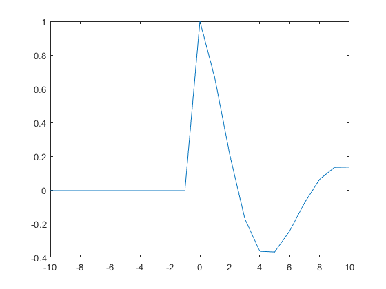
Pasando la función a tiempo discreto se usa el comando "stem"
n=(-10:10)'; stem(n,f(n),'k'); xlabel('n'); ylabel('f[n]');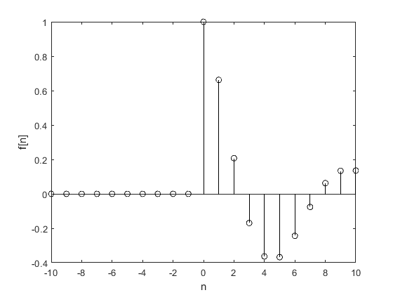
Si bien la función funciona correctamente para una operación de reducción de muestreo como f[2n]
stem(n,f(2*n),'k'); xlabel('n'); ylabel('f[2*n]');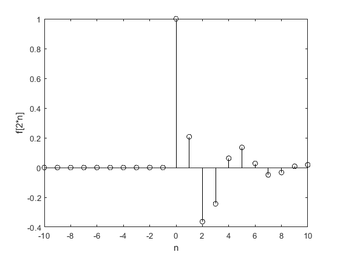
Se modifica la función anónima para que tambien acomode correctamente las operacciónes de muestreo.
f= @(n) exp(-n/10).*cos(pi*n/10).*(n>=0).*(mod(n,2)==0); f(n) stem(n,f(n),'k'); xlabel('n'); ylabel('f[n/2]'); %
ans =
0
0
0
0
0
0
0
0
0
0
1.0000
0
0.6624
0
0.2071
0
-0.1696
0
-0.3635
0
-0.3679
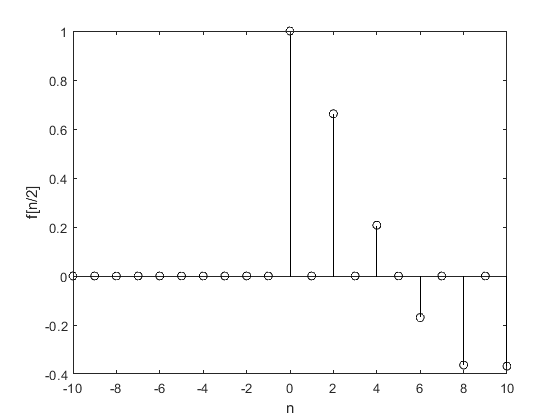 Sección 2
Se grafican las siguientes señales a partir de la señal que se muestra a a continuación.
n= -15:15; x= @(n) n .* (heaviside(n+3.5)-heaviside(n-3.5)); stem(n,x(n),'k'); xlabel('n'); ylabel('x[n]');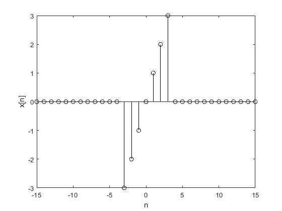
a) x[-n]
stem(n,x(-n),'k'); xlabel('n'); ylabel('x[-n]');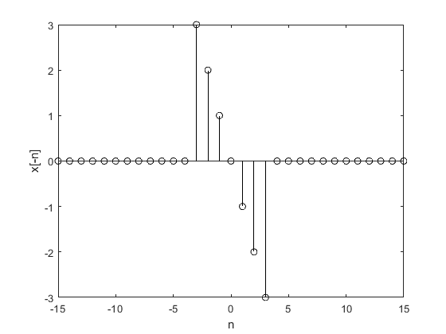
b)x[n+6]
stem(n,x(n+6),'k'); xlabel('n'); ylabel('x[n+6]');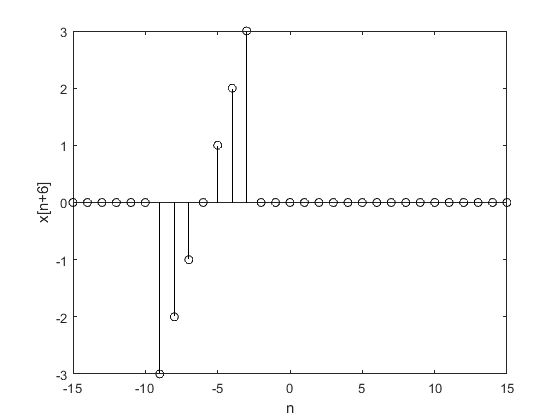
c) x[n-6]
stem(n,x(n-6),'k'); xlabel('n'); ylabel('x[n-6]');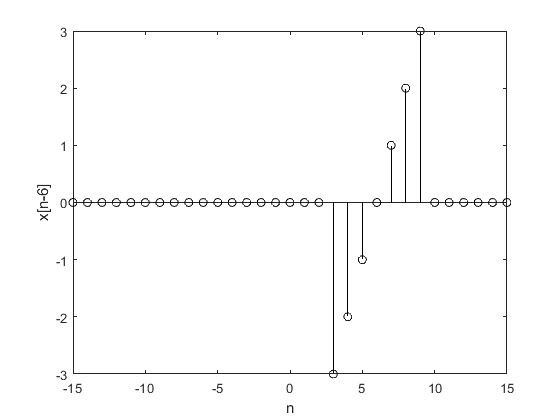
d) x[3n]
x= @(n) n .* (heaviside(n+3.5)-heaviside(n-3.5)).*(mod(n,3)==0); stem(n,x(n),'k'); xlabel('n'); ylabel('x[3n]');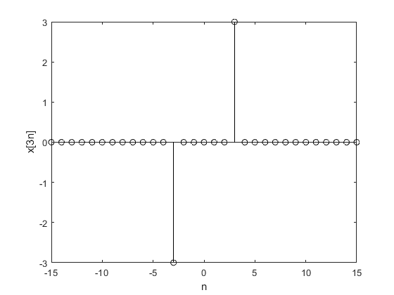
e) x[n/3]
x= @(n) n/3 .* (heaviside((n/3)+3.5)-heaviside((n/3)-3.5)).*(mod(n,3)==0); stem(n,x(n),'k'); xlabel('n'); ylabel('x[n/3]');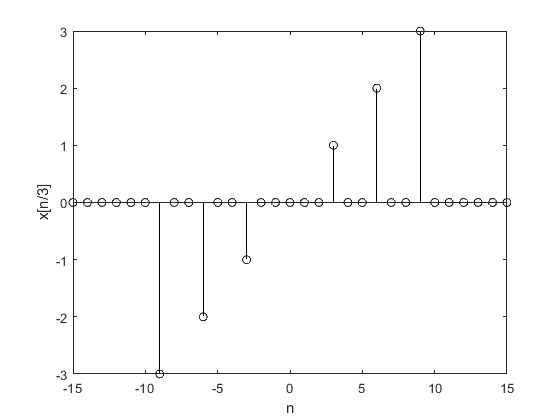
f) x[3-n]
x= @(n) n .* (heaviside(n+3.5)-heaviside(n-3.5)); stem(n,x(3-n),'k'); xlabel('n'); ylabel('x[3-n]');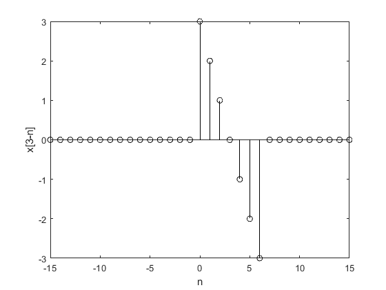
Sección 3
Suppose a vector x exists in the MATLAB workspace, corresponding to a finite-duration DT signal x[n]
(a) Write a MATLAB function that, when passed vector x, computes and returns Ex, the energy of x[n].
(b) Write a MATLAB function that, when passed vector x, computes and returns Px, the power of x[n]. Assume that x[n] is periodic and that vector x contains data for an integer number of periods of x[n].
A continuación se muestra el código requerido para resolver el inciso(a)
- Código para la energía:
syms n
x=[val_inicial;val_final];
assume(n,'integer');
f= @(n)
E=0;
for i:x E= E+(f(i)).^2; end
disp(E)
A continuación se muestra el código requerido para resolver el inciso (b)
- Código para la potencia:
sysms n
x=[val_inicial;val_final];
assume(n,'integer');
f= @(n)
P=0;
for i:x P= P+1/(length(x)).*(f(i)).^2; end
disp(P)
Sección 4
Con los programas desarrollados en el punto 3, resuelva 3.1-1 c) y 3.1-2 b)
3.1-1 Find the energy of the signals depicted in Fig. P3.1-1.
Graficando la señal x[n] de la figura (c)
n=[-5:5]; f= @(n) (3.*n).*(-3<=n & n<=3); stem(n,f(n)) grid on xlabel('${n}$','interpreter','latex') ylabel('$x[n]$','interpreter','latex') title('Figura (c)')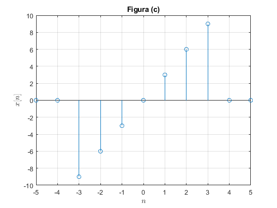
Calculando la energìa de x[n]:
syms n assume(n,'integer'); x=[-3:3]; f= @(n) (3.*n); E=0; for i= x E= E+(f(i)).^2; end disp(E)
252
3.1-2 Find the power of the signals illustrated in Fig. P3.1-2.
Graficando la señal x[n] de la figura (b) tomando el intervalo [-3,3]
n=[-5:5]; f= @(n) n.*(-3<=n & n<=3); stem(n,f(n),'r') grid on xlabel('${n}$','interpreter','latex') ylabel('$x[n]$','interpreter','latex') title('Figura (b)')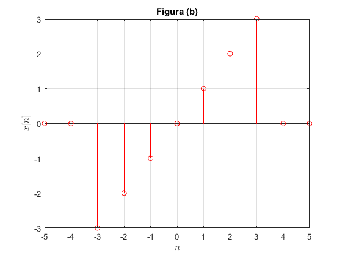
Calculando la potencia de x[n]:
syms n assume(n,'integer'); x=[-3:8]; f= @(n) n.*(-3<=n & n<=3); P=0; for i= x P= P+1/(length(x)).*(f(i)).^2; end disp(P)
2.3333
Seccion 5
Se realizó la siguiente App. Los detalles de esta se encuentran dentro de ella.
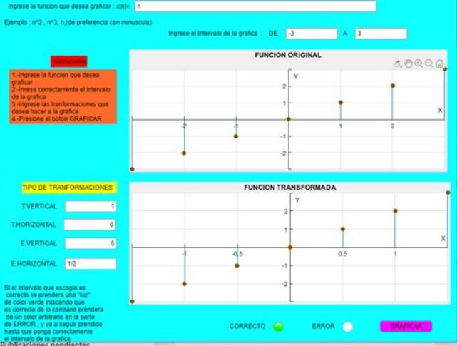